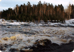
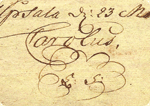
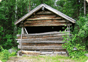
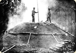
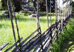
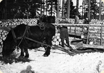
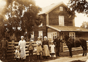

Gården Per Nirs har en historia som sträcker sig tillbaka till början av 1600-talet.
Välj den epok du vill läsa mer om:
|  | Förhistoria (före 1607) För 6 000 år sedan kom Hedesunda, trakten där gården Per-Nirs ligger, upp ur havet. Läs mer » |
|
|  | Etablering (1607) Genom ett kungabrev daterat 23 mars 1607 fick "Lars Persson i Hedsn" rätten att "optaga ett ödeshemman i Hedesunda socken Dalkarsbo benämt". Läs mer » |
|
|  | Ängsslåtter (1600-talet) Under 1600-talet fanns det ju inte mycket uppodlad jord i byn och höet från ängsslåttern var en viktig del av utfordringen av djuren under vintern. Läs mer » |
|
|  | Kolning (1700-talet) Hedesunda socken blev under 1600-talets andra hälft omgärdat av två av Sveriges stora järnbruk, Söderfors och Gysinge. Läs mer » |
|
|  | Byn förändras (1800-talet) Byns gränser ritas om i och med laga skifte och Per Nirs delas i två gårdar. Läs mer » |
|
|  | Virkeskörning (1880–1960) Kolning var ju en viktig bisyssla för bönderna under nästan 200 år. Vid mitten av 1800-talet tillkommer virkeskörning under vinterhalvåret. Läs mer » |
|
|  | Den senaste tiden (1900-talet) Under 1900-talets första hälft genomgick såväl Sverige som gården stora förändringar. Inte minst tekniska landvinningar förändrade gårdens förutsättningar. Läs mer » |
|